Lavori boschivi e forestali
Taglio di boschi e lotti, strade forestali, ingegneria naturalistica, potature in tree climbing e lavori in fune. Da Valdobbiadene in tutto il Nord Italia.
Per privati, comuni, consorzi ed enti.
- 1994l'anno in cui nasce la ditta
- 8tipi di intervento, dal taglio alla fune
- Italia e UEdove l'impresa può lavorare
- PSR Venetolavori finanziati con fondi europei
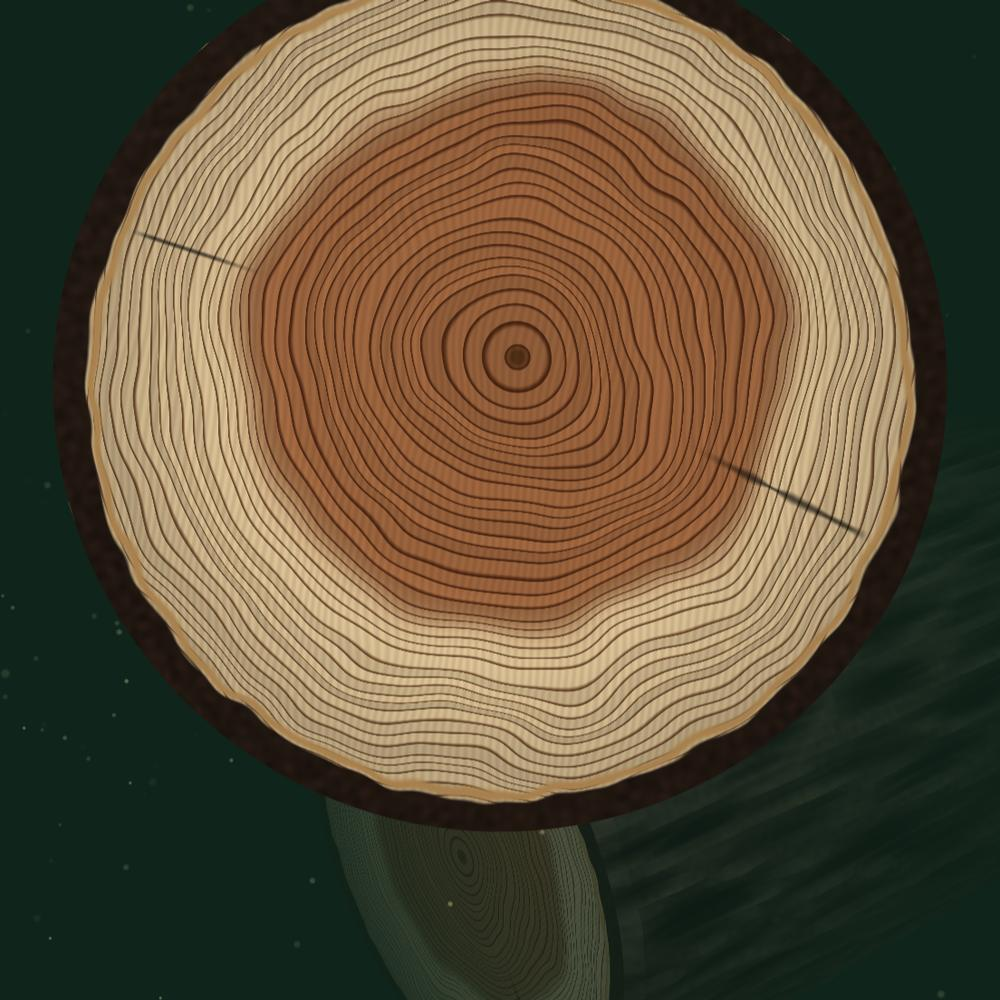
Dal 1994, un anello alla volta
- Nel taglio di un tronco gli anni si contano: un anello per ogni anno.
- Il primo anello è il 1994: a Valdobbiadene nasce la ditta Burtet Paolo.
- Oggi gli anelli sono 32. Boschi tagliati e curati, pascoli recuperati, sentieri e strade forestali in tutto il Nord Italia.
Dal taglio del bosco alla strada per arrivarci
Otto tipi di intervento per boschi pubblici e privati, pascoli, parchi e versanti. Apri un intervento per vedere cosa comprende e chiedere un preventivo.
-
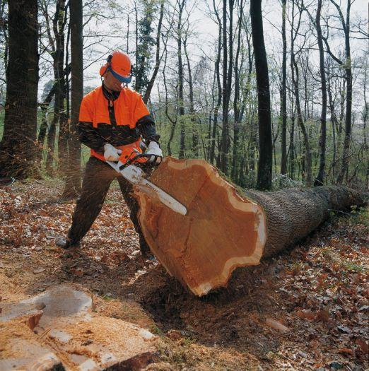
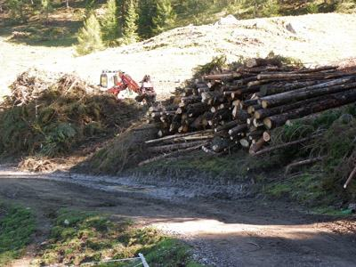
- Taglio di boschi pubblici e privati, cedui o d'alto fusto, nel rispetto della normativa
- Carburanti ecologici per le macchine
- Legna da ardere, legname da misura (tronchi) e biomasse
- Abbattimenti in città per depezzatura, con autoscala o tree climbing
- Abbattimenti vicino a linee elettriche, telefoniche e ferroviarie, anche in centro abitato
-
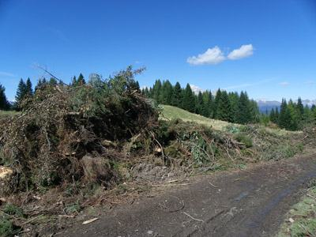
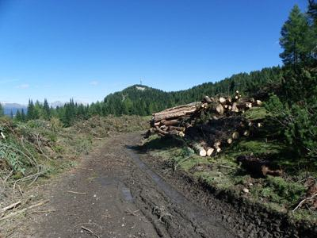
Nel bosco
- Puliture e sfolli nei giovani impianti
- Diradamenti nelle fustaie troppo fitte
- Avviamento ad alto fusto dei cedui invecchiati e riceppatura dei cedui degradati
- Raccolta della biomassa che ne risulta, per uso energetico
In prati, pascoli e malghe
- Sfalci periodici, decespugliamenti e spietramenti
- Invasi per l'abbeveraggio del bestiame
-
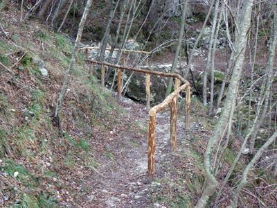
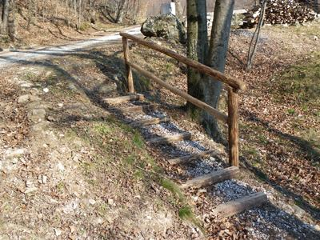
Interventi per curare il territorio e renderlo più facile da vivere.
- Sentieri nuovi, ripristinati e mantenuti, anche didattici
- Aree attrezzate e giardini botanici
- Recinzioni e staccionate rustiche
- Siepi di alberi e arbusti
- Interventi selvicolturali su alberi monumentali
-
Viali, parchi e giardini. Dove l'autoscala non entra, l'operatore sale sulla pianta in corda.
- Potature di formazione, innalzamento e riduzione in altezza della chioma
- Rimozione del secco
- Consolidamento con ancoraggi e tiranti
- Abbattimenti a caduta o per depezzatura
- Rimozione delle ceppaie con escavatore, o livellamento con fresa
-
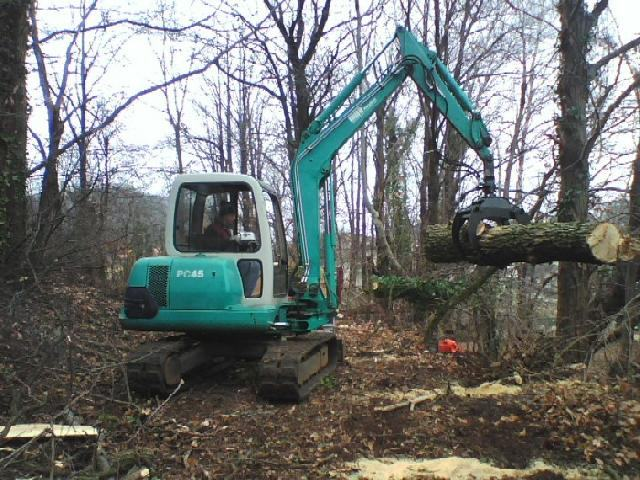
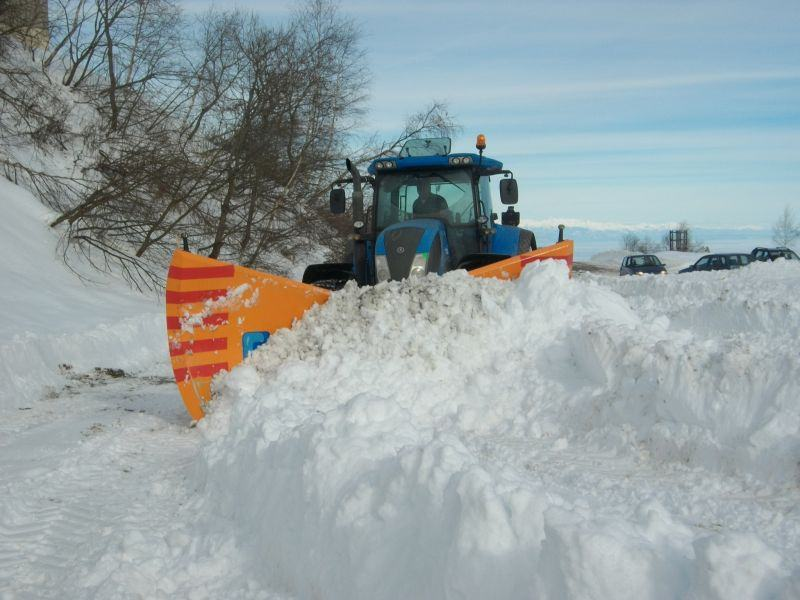
- Costruzione e manutenzione di strade e piste forestali, con tutte le opere collegate
- Opere che riducono l'impatto, fatte con l'ingegneria naturalistica
- Sostegni in pietrame e legname (arcie), gradonate, cordonate e viminate
- Canalette in legname e pietrame
- Muretti in pietrame a secco e terre armate
- Sgombero neve
-
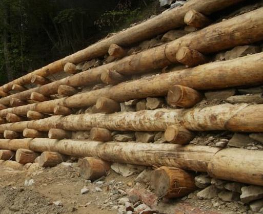
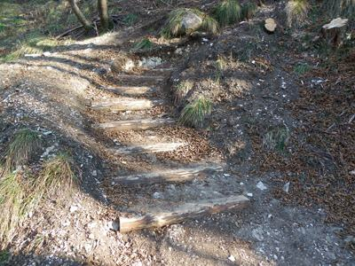
- Disgaggi e demolizioni con posa di reti metalliche
- Barriere paramassi e imbracatura di massi pericolanti
- Controllo dell'erosione: biostuoie, biotessili, semine a spaglio e idrosemine
- Versanti stabilizzati con gradonate con piantine, cordonate e viminate
- Grate in legname con talee, palizzate, arcie e terre armate
-
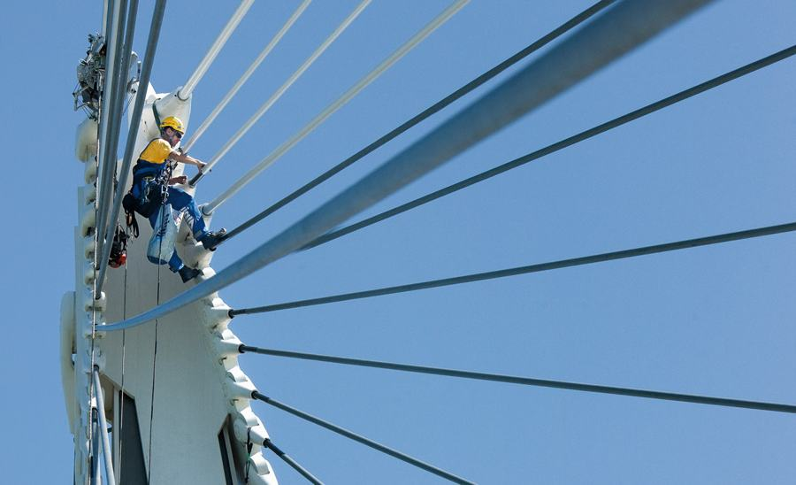
Gli operatori hanno esperienza speleo-alpinistica e i corsi di abilitazione per l'accesso e il posizionamento con funi.
- Potatura di qualsiasi pianta
- Ispezione di pozzi e cavità artificiali
- Tetti: manutenzione, sgombero neve, grondaie e pluviali
- Facciate: pulizia di pareti e vetri, malte, tinteggiature, poggioli
- Demolizioni controllate, impermeabilizzazioni, dissuasori anti-piccione
- Rilievi fotografici
-
Per proprietari privati, associazioni, consorzi ed enti pubblici: informazioni e procedure per accedere ai contributi del settore forestale, in particolare agli aiuti del Piano di Sviluppo Rurale della Regione del Veneto.
Guarda un intervento finanziato dal PSR
Chiedi informazioni sui contributi
Comelico, il bosco dopo il bostrico e il vento
In località Giavi Anterigole, a San Nicolò di Comelico (BL), la ditta lavora a un intervento selvicolturale: taglio e allontanamento delle piante morte o compromesse dal bostrico tipografo e dagli schianti da vento.
- Finanziato da
- Complemento di sviluppo rurale per il Veneto 2023–2027
- Intervento
- SRD12.2, ripristino del potenziale forestale danneggiato
- Decreto
- n. 869/2024 del 12 marzo 2024
Anche il tuo bosco è stato danneggiato? La ditta ti spiega come accedere ai contributi forestali del PSR Veneto.
Chiedi dei contributi: 329 129 9844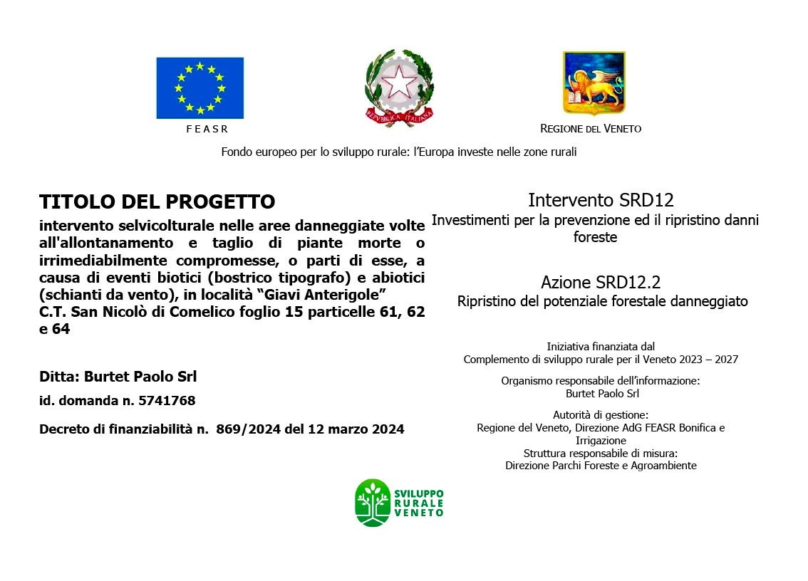
Dal cantiere
Sentieri, staccionate, piste forestali e legname: alcuni lavori della ditta. Scorri le foto.
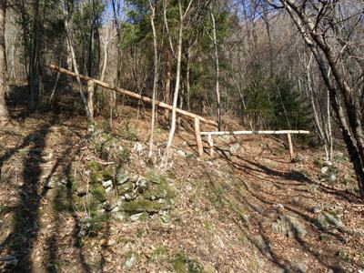
Staccionata e muretto a secco Sezionatura di un tronco 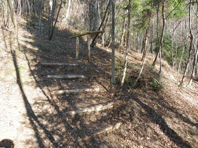
Gradini in legname 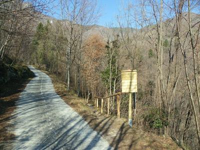
Strada forestale con staccionata Palizzata in legname 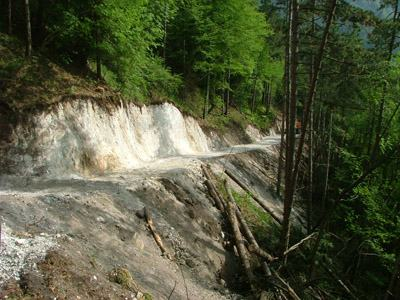
Apertura di una pista 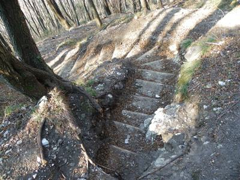
Gradinata su versante 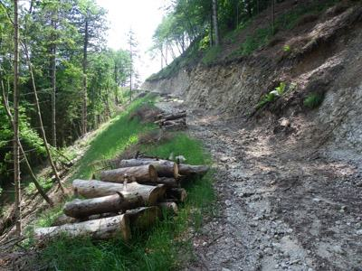
Legname accatastato in pista Escavatore con pinza Sgombero neve
Raccontaci il lavoro
Scrivi dove si trova e cosa c'è da fare. Su WhatsApp puoi aggiungere foto e posizione: aiutano a capire subito il lavoro.
- Fax
- 0437 540646
- Sede
- Via Guicciardini 2/2
31049 Valdobbiadene (TV) - Orari
- [DA CONFERMARE]